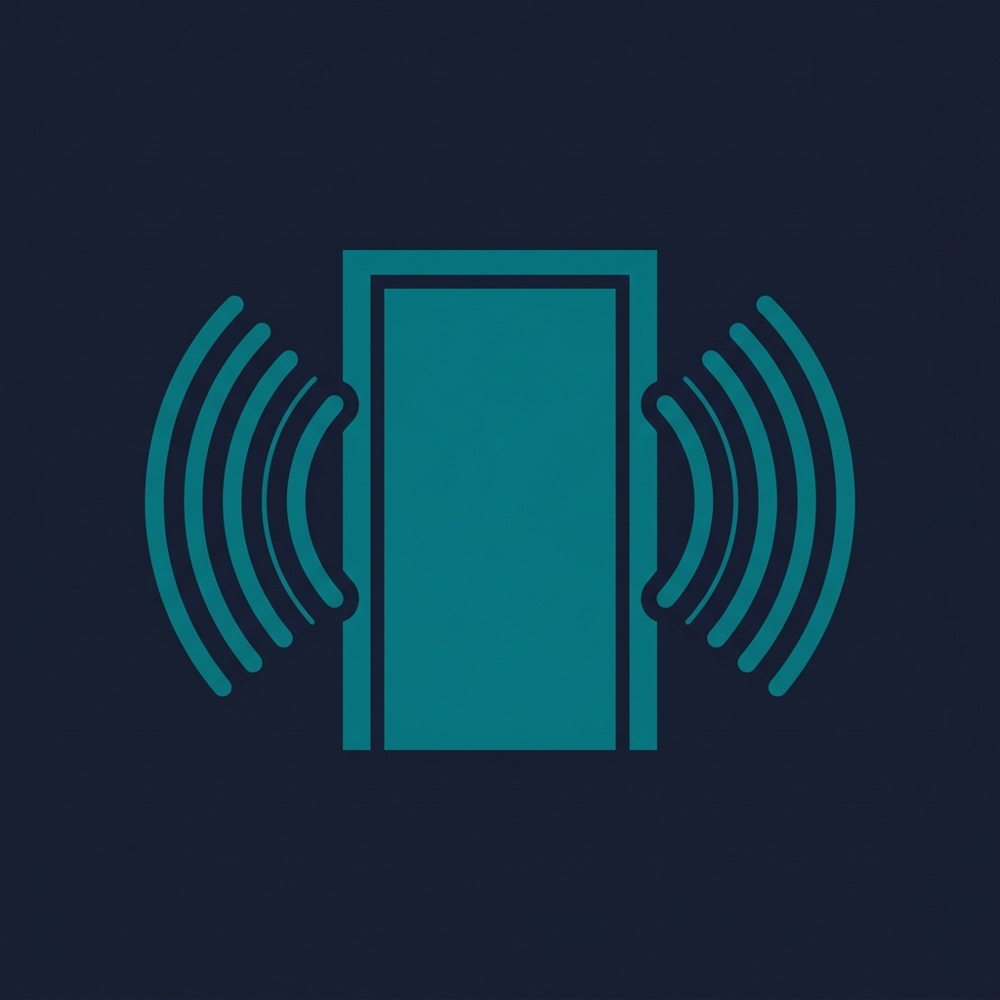

Otomore（音漏れチェッカー）は、iPhoneのマイクだけで部屋の「音漏れ」を測定し、 スコアと等級（A〜E）で判定するアプリです。ドアの外の静けさ→室内→ドアの外、の3ステップを 90秒ほど測るだけで、業者を呼ばずに「隣や外にどれだけ音が漏れているか」をその場で数値化できます。 在宅勤務のWeb会議、楽器や弾き語り、配信、賃貸暮らしの防音対策など、「音を出しても大丈夫か」が 気になる方のためのアプリです。
3ステップ測定（回数無制限）・総合スコア0〜100＋等級A〜E＋一言判定・結果の画像共有は、 すべて無料でお使いいただけます。
買い切りのPro（¥1,600）にアップグレードすると、 どの周波数帯で音が抜けているかが分かる帯域別の漏れ内訳チャートが解放され、 対策の狙いを定めやすくなります。サブスクリプションではなく、一度のお支払いで永続的にご利用いただけます。
ご質問・ご要望・不具合報告は、お問い合わせフォームよりお寄せください。
Otomore measures how much sound leaks out of your room using only your iPhone's microphone. In three quick steps — the quiet outside your door, then the room with a sound source playing, then outside the door again — it scores the leak from 0 to 100 and grades it A through E, so in about 90 seconds you know whether your space is quiet enough, without calling in a professional.
Otomore is a screening-level relative measurement and is not a substitute for a certified acoustic measurement.
The app collects no personal data and works fully offline. Microphone audio is analyzed on device only to compute your score — it is never recorded or transmitted. See the Privacy Policy.